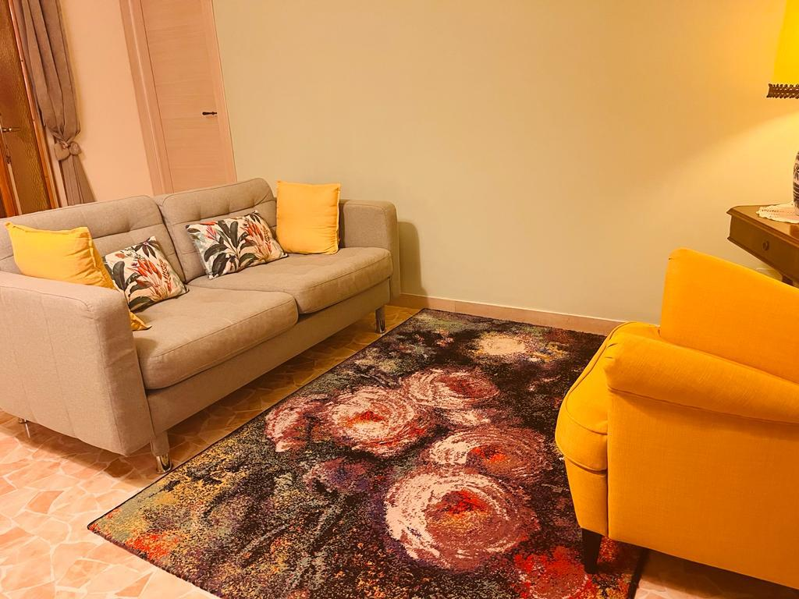
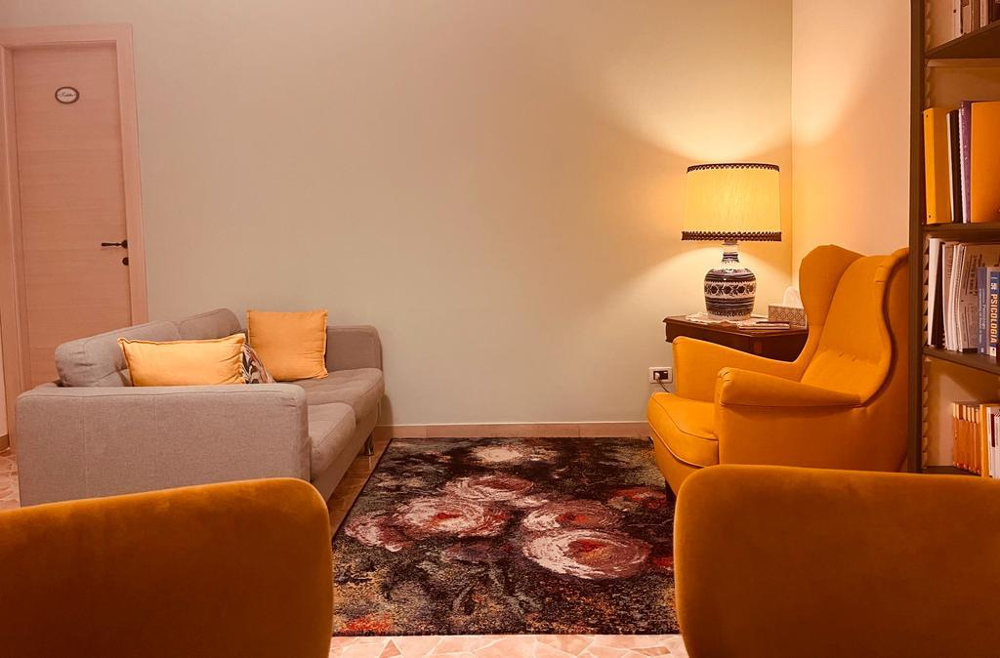
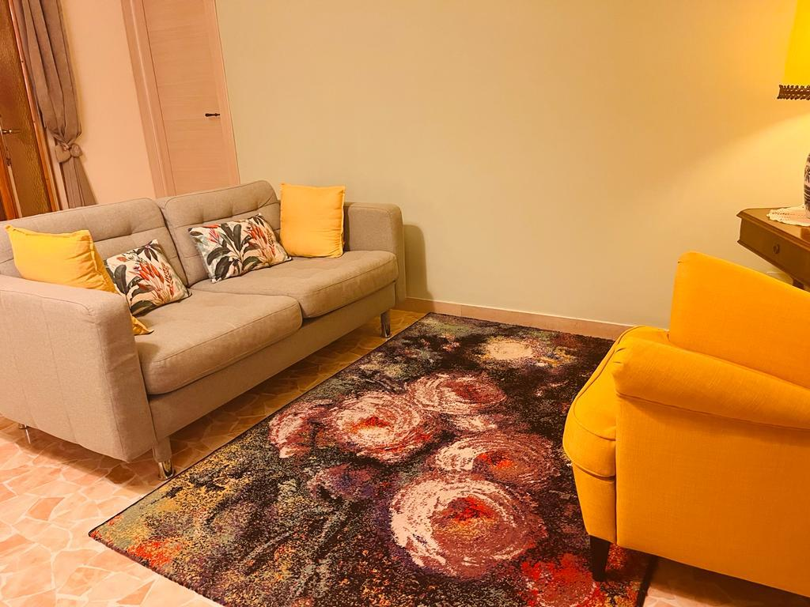
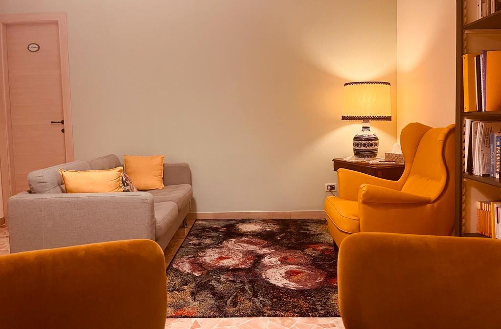
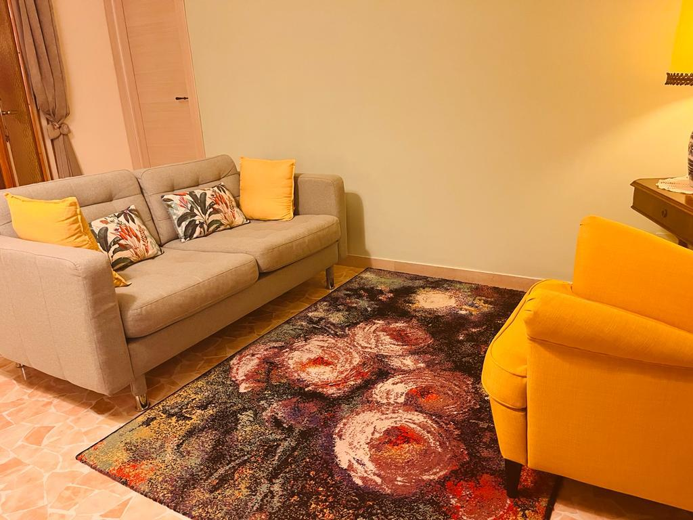
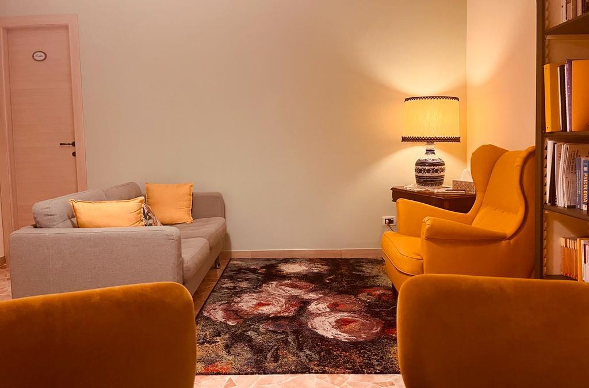

Lo studio
Ricevo nel mio studio a Bologna, uno spazio intimo ed accogliente dove sentirti a tuo agio.
 



Gli incontri offrono un’occasione per favorire il raggiungimento di uno stato di benessere, di accettazione e valorizzazione profonda e consapevole di sè, sostenendo il senso di autostima e autoefficacia e implementando le proprie capacità di adattamento.
Le motivazioni possono essere le più svariate. Quando si sente il bisogno di migliorare la propria vita, le relazioni con gli altri, la propria autostima. Per essere aiutati a gestire meglio lo stress, quando si avverte il bisogno di essere guidati o supportati nella propria crescita personale, attivando le proprie risorse o quando si vuole raggiungere un obiettivo importante. In generale in tutte quelle situazioni nelle quali viviamo momenti di difficoltà che creano sofferenza facendoci sentire “bloccati”, in “crisi”, o semplicemente con lo scopo di migliorarsi e conoscersi meglio.Gli incontri con lo psicologo offrono un’occasione per favorire il raggiungimento di uno stato di benessere, di accettazione e valorizzazione profonda e consapevole di sè, sostenendo il senso di autostima e autoefficacia e implementando le proprie capacità di adattamento.
Ricevo nel mio studio a Bologna, uno spazio intimo ed accogliente dove sentirti a tuo agio.



“Qualsiasi impressione, anche la più insignificante, lascia una traccia, che può rivivere.” Sigmund Freud
Colloquio su appuntamento.